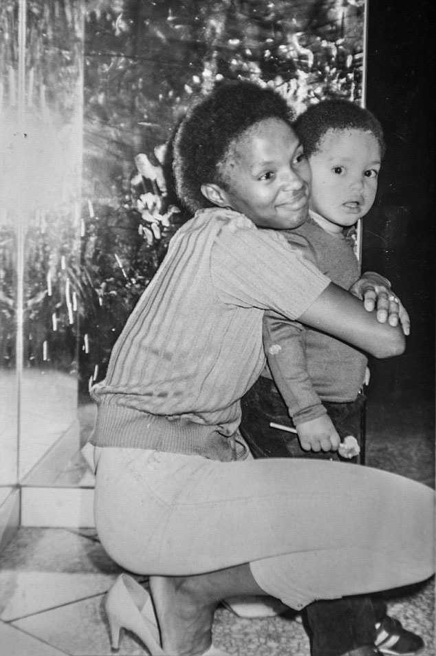

January 11th 2020
Born a Crime is an autobiography of the famous The Daily Show host Trevor Noah. This is the book about not just Trevor Noah but also his mom Patricia Nombuyiselo Noah and them navigating South Africa during apartheid and post-apartheid period. The book is very fast and engaging with stories that will at times leave you on your chair laughing like a fool and at times almost sobbing.
Trevor Noah was born to a black South African woman and a white Swiss man. During apertheid, it was a crime for the blacks and the whites to marry let alone have kids. However, as constantly seen throughout the book, Noah’s mother was a rebel and a free spirit. It is often hard to do things different from your culture. However, Noah’s mother had a bigger vision than just following old culture and traditions that often made little sense.
When it was time to pick my name, she chose Trevor, a name with no meaning whatsoever in South Africa, no precedent in my family. It’s not even a Biblical name. It’s just a name. My mother wanted her child beholden to no fate. She wanted me to be free to go anywhere, do anything, be anyone.
The love between Noah and his mother being shown time and again was very heartwarming. It is important however to note that the expression of love often included Trevor getting disciplined with beatings. Whenever this came up, it brought back a lot of memories of my childhood getting beaten by my mom in order to discipline me. Out of four children, I was the one in the family who had received the most beatings from my mom. Looking back, even though I probably hated it at the time, I am so thankful for all of it because it has shaped me into who I am today.
This book has definitely given me a glimpse of what life was like in South Africa during aprtheid and the discrimination that black people faced in their own country.
..for almost all the kids I knew on my grandmother’s block in Soweto, apartheid had taken away their fathers as well, just for different reasons. Their fathers were off working in a mine somewhere, able to come home only during the holidays. Their fathers had been sent to prison. Their fathers were in exile, fighting for the cause
Trevor Noah has faced his fair share of struggles from not fitting into any friend group because of his skin color to not being able to even take a walk with his parents in the park. Whenever the family went to parks, Noah’s dad would be a good distance away from him because it was illegal for a white man and a black woman to have kids. And from time to time Trevor’s mother would suddenly let go of his hand whenever there was a policeman around and claim he wasn’t her son because a light-skinned child with a black woman raised too many questions.
One of my favourite funny stories from the book is when Trevor poops on the kitchen floor. So basically, Trevor poops on a newspaper, laid on the kitchen floor thinking he was alone in the house. To his surprise his great-grandmother Koko who is blind hears the noises coming from the kitchen and calls out to see if anyone is there. Trevor quitely finishes his business and dumps the newspaper in the waste bin. Later that day, when the family is back together Koko tell’s Noah’s mother that there was something in the house because of the smell and the noise she heard earlier. Noah’s mother finds the newspaper in the bin and declares that there was a demon in the house.
For my mother, this was the logical conclusion. Because that’s how witchcraft works. If someone has put a curse on you or your home, there is always the talisman or totem, a tuft of hair or the head of a cat, the physical manifestation of the spiritual thing, proof of the demon’s presence.
The commotion didn’t stop there because when there’s a demon around, the whole community has to join together to drive it out. If you’re not part of the prayer, the demon might leave our house and go to your house and curse you.
I stood there, my shit burning in the driveway, my poor aged grandmother tottering up and down the street in a panic, and I didn’t know what to do.
Moments later, Trevor gets called by his grandmother to join them in praying to Jesus to drive out the demon. Since he soke English, he was always asked to pray.
I was terrified. I believed in the power of prayer. I knew that my prayers worked.
Dear Lord, please protect us, um, you know, from whoever did this but, like, we don’t know what happened exactly and maybe it was a big misunderstanding and, you know, maybe we shouldn’t be quick to judge when we don’t know the whole story and, I mean, of course you know best, Heavenly Father, but maybe this time it wasn’t actually a demon because who can say for certain, so maybe cut whoever it was a break…

A young Trevor Noah with his mother Patricia Nombuyiselo Noah